<div class="d-flex justify-content-around" style="background-color: black;">
    <fa-icon class="icon" [icon]="['fab', 'angular']"></fa-icon>
    <fa-icon class="icon" [icon]="['fab', 'github']"></fa-icon>
    
    
    
    
    
    
</div>